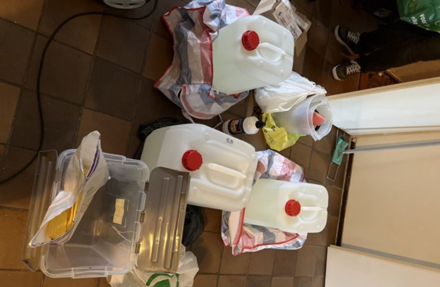
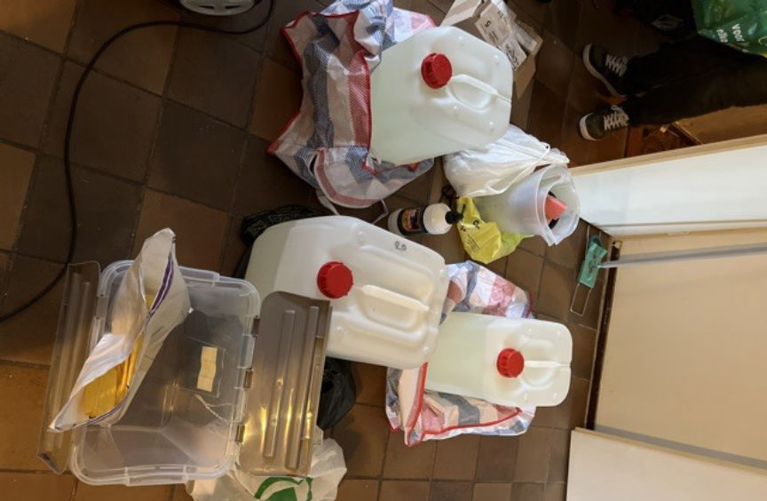

International Dark Web Drug Trafficking Ring Busted
Authorities in Germany and the Netherlands arrested suspects accused of distributing large quantities of drugs worldwide through multiple dark web marketplaces.

The Koblenz Public Prosecutor's Office accuses the suspects of participating in the distribution of hundreds of kilos of drugs including 740 kgs of amphetamine, 19 kgs of MDMA, and 7 kgs of methamphetamine, and making over 950, 000 euros. The suspects distributed the drugs to fulfill more than 9,107 orders placed through vendor accounts that run on over 13 dark web marketplaces from at least November 2019 to December 2021.
The Oldenburg Central Criminal Inspectorate lauched investigations into the suspects' drug trafficking operation in January 2021 after acquiring information on the vendor from the seizure of DarkMarket.
The investigations first led the investigators to a post office in Cologne. Here, they reportedly established that the operator and an employee of the post office were involved in the drug trafficking operation. They allegedly accepted drug packages brought to the post office after office hours and mailed them to their buyers.
The investigators believe the post office was used to mail drug packages with a total weight of more than 1000 kilos to buyers from all over the world.
The investigators then identified five suspects that acted as drug couriers. They include two Dutch nationals, aged 58 and 78, suspected of having made courier trips for the operators of the vendor accounts.
From the "intensive investigations" that followed, the investigators reportedly established that the vendor accounts were run by two Dutch nationals aged 37 and 42. The duo imported drugs into Germany from the Netherlands and resold them through the vendor accounts for profit. They allegedly imported drugs on more than 43 occasions between January and November 2022.
Following over two years of investigations, the police and prosecutors in Germany and the Netherlands executed search warrants at properties associated with the suspects on June 28, 2023.
The searches led to the arrest of one of the suspected operators of the vendor accounts, the two suspects at the Cologne post office, and three suspects in the Netherlands.
The searches also resulted in the seizure of 55 liters of amphetamine base, a firearm, and 150,000 euros in cash.
The operator of the Cologne post office and his employee were placed in pretrial detention by the Koblenz District Court. The authorities are still in search of the second operator of the vendor account as part of the ongoing investigations.

Drugs seized during the bust
The Koblenz Public Prosecutor's Office accuses the suspects of participating in the distribution of hundreds of kilos of drugs including 740 kgs of amphetamine, 19 kgs of MDMA, and 7 kgs of methamphetamine, and making over 950, 000 euros. The suspects distributed the drugs to fulfill more than 9,107 orders placed through vendor accounts that run on over 13 dark web marketplaces from at least November 2019 to December 2021.
The Oldenburg Central Criminal Inspectorate lauched investigations into the suspects' drug trafficking operation in January 2021 after acquiring information on the vendor from the seizure of DarkMarket.
The investigations first led the investigators to a post office in Cologne. Here, they reportedly established that the operator and an employee of the post office were involved in the drug trafficking operation. They allegedly accepted drug packages brought to the post office after office hours and mailed them to their buyers.
The investigators believe the post office was used to mail drug packages with a total weight of more than 1000 kilos to buyers from all over the world.
The investigators then identified five suspects that acted as drug couriers. They include two Dutch nationals, aged 58 and 78, suspected of having made courier trips for the operators of the vendor accounts.
From the "intensive investigations" that followed, the investigators reportedly established that the vendor accounts were run by two Dutch nationals aged 37 and 42. The duo imported drugs into Germany from the Netherlands and resold them through the vendor accounts for profit. They allegedly imported drugs on more than 43 occasions between January and November 2022.
Following over two years of investigations, the police and prosecutors in Germany and the Netherlands executed search warrants at properties associated with the suspects on June 28, 2023.
The searches led to the arrest of one of the suspected operators of the vendor accounts, the two suspects at the Cologne post office, and three suspects in the Netherlands.
The searches also resulted in the seizure of 55 liters of amphetamine base, a firearm, and 150,000 euros in cash.
The operator of the Cologne post office and his employee were placed in pretrial detention by the Koblenz District Court. The authorities are still in search of the second operator of the vendor account as part of the ongoing investigations.